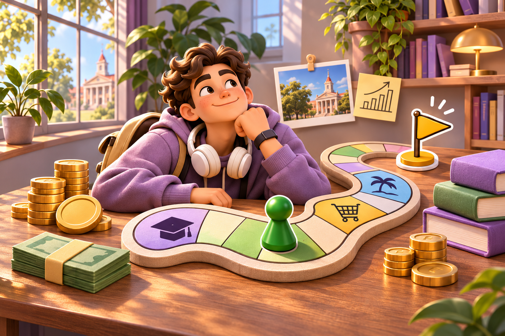
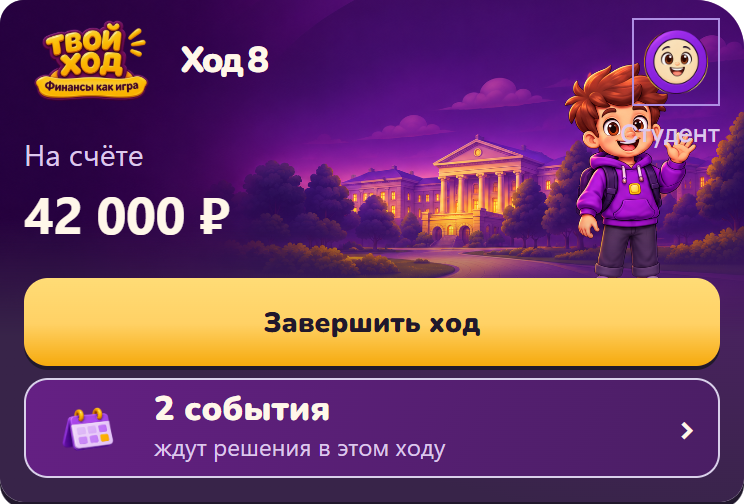
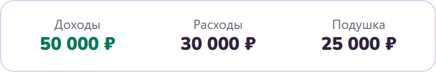
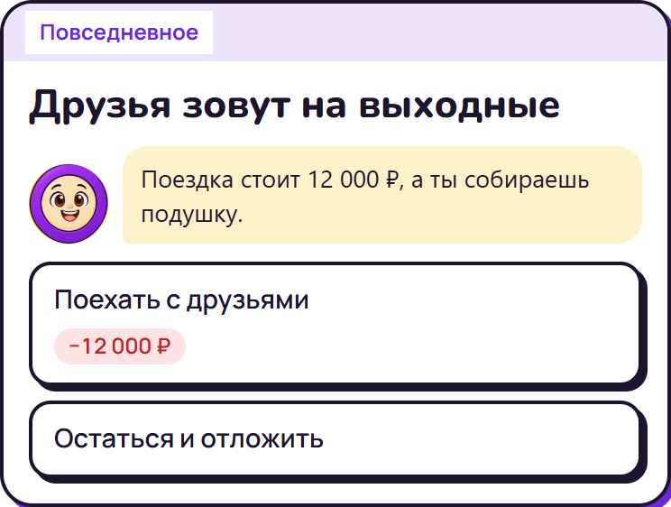

Начни свою историю
Познакомься с доходами, обязательствами и целью своего персонажа.

ИГРА ПРО ДЕНЬГИ И ЖИЗНЬ
Зарплата пришла. Планы уже есть. А жизнь снова подкидывает выбор. Проживи свою финансовую историю — и посмотри, к чему приведут решения.
Ранняя версия · В браузере · Первый запуск — до 30 секунд
Карта хода, финансы и событие с последствиями выбора.



За месяц ты получаешь зарплату, решаешь события и видишь последствия.
Познакомься с доходами, обязательствами и целью своего персонажа.
Забери зарплату, разберись с двумя событиями месяца. Реши, что потратить, а что отложить.
Нажми «Завершить ход». Посмотри, как изменились финансы и насколько ты приблизился к цели.
В идеальном плане всё сходится. А в жизни приходится выбирать. Как поступишь ты?
Попробуй прямо здесь
В игре редко бывает одна «правильная» кнопка. У каждого решения — своя цена.
Упрощённый пример для лендинга. Суммы условные, результат не переносится в игру.
Давно не виделись. Поездка стоит 12 000 ₽, а ты собираешь подушку. Что выберешь?
За цифрами — жизнь
Финансовая цель важна. Но еда, жильё, здоровье и комфорт тоже влияют на жизнь персонажа. Баланс придётся искать тебе.
Доходы, расходы, долги, инвестиции и страховки складываются в одну картину.
У персонажа есть путь к победе. Твои решения определяют, как ты его пройдёшь.
На Главной видны комфорт, статус, связи и здоровье персонажа.
Это направление разработки, а не обещание сроков. Следующий шаг — после проверки предыдущего.
Ранняя версия: персонажи, игровые месяцы, события и цели.
Можно попробовать основу партии и увидеть последствия выбора.Понятный интерфейс, проверка расчётов, стабильности и темпа игры.
Дорабатываю первый опыт и собираю обратную связь.Постоянный сервер и возможность познакомиться с игрой без личного приглашения.
Запуск — после проверки готовности. Открытый демосервер ещё не запущен.Развитие событий, целей и баланса по тому, как люди играют на самом деле.
Приоритеты уточню по результатам демо и отзывам игроков.Перед первым ходом
Можно знакомиться с финансовыми решениями по ходу игры: выбирать, смотреть на изменения и пробовать снова. Это игра с элементами финансовой грамотности.
Нет. Игровой месяц завершается твоим действием, а не по таймеру. Можно играть в своём темпе и делать паузы.
Основной вход — браузер. Игру также можно установить как PWA в поддерживаемом браузере. Telegram — дополнительный канал.
Нет. Ты управляешь финансами игрового персонажа. Игра не подключается к банковскому счёту и не даёт персональных финансовых рекомендаций.
Сервер ранней версии засыпает, когда в игру давно никто не заходил. Первый запуск после паузы может занять 20–30 секунд, дальше обычно быстрее.
Игра развивается: баланс и интерфейс могут меняться, возможны ошибки. Если что-то непонятно или сломалось, расскажи нам через контакт внизу страницы.